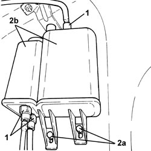

1080E20 ACTIVE CARBON FILTER FOR FUEL VAPOURS - R + R
- Path
- Procedures > 10 ENGINE > 1080 EMISSION CONTROL SYSTEM > 1080E EVAPORATION CONTROL SYSTEM > 1080E20 ACTIVE CARBON FILTER FOR FUEL VAPOURS - R + R
- Kind
- repair procedure (removal / refitting; the operation number is the code)
- Applies to
- engines: 1.9 JTS, 2.2 JTS, 3.2 JTS; all production periods
- Interactive page
- https://sloeber94.github.io/elrnDB/alfa/159/en/#/939010629
Applies to: engines: 1.9 JTS, 2.2 JTS, 3.2 JTS; all production periods
 Removing
Removing
 Refitting
Refitting- Position the vehicle on a lift.
Op. 4450B06 LEFT REAR WHEEL - R.R
Op. 7055B44 LEFT REAR WHEEL ARCH LINER - R.R
Op. 1076B22 REAR EXHAUST SILENCERS (ONE) LH OR RH R R
(left side).
Op. 1076A52 EXHAUST PIPE REAR HEAT SHIELD(S) - R.R
(left side).
1. Disconnect the rapid connectors for the fuel vapour pipes from the active charcoal filter with built in fuel vapour separator.
2. Undo the bolts (2a) and remove the active charcoal filter with built in fuel vapour separator (2b).

Applies to: engines: 1.9 JTS, 2.2 JTS, 3.2 JTS; all production periods
Refitting
Removing- Place the active charcoal filter with built in fuel vapour separator in position and secure it using the bolts.
- Connect the rapid connectors for the fuel vapour pipes to the active charcoal filter with built in fuel vapour separator.
Op. 1076A52 EXHAUST PIPE REAR HEAT SHIELD(S) - R.R
(left side).
Op. 1076B22 REAR EXHAUST SILENCERS (ONE) LH OR RH R R
(left side).
Op. 7055B44 LEFT REAR WHEEL ARCH LINER - R.R
Op. 4450B06 LEFT REAR WHEEL - R.R
- Remove the vehicle from the lift.